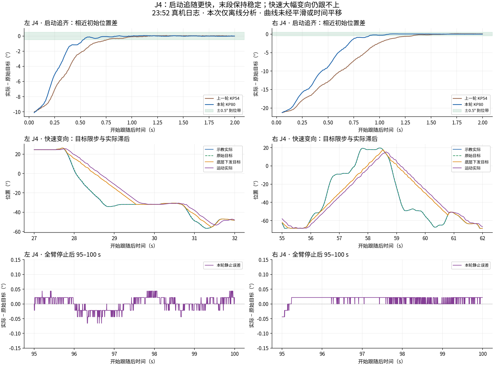
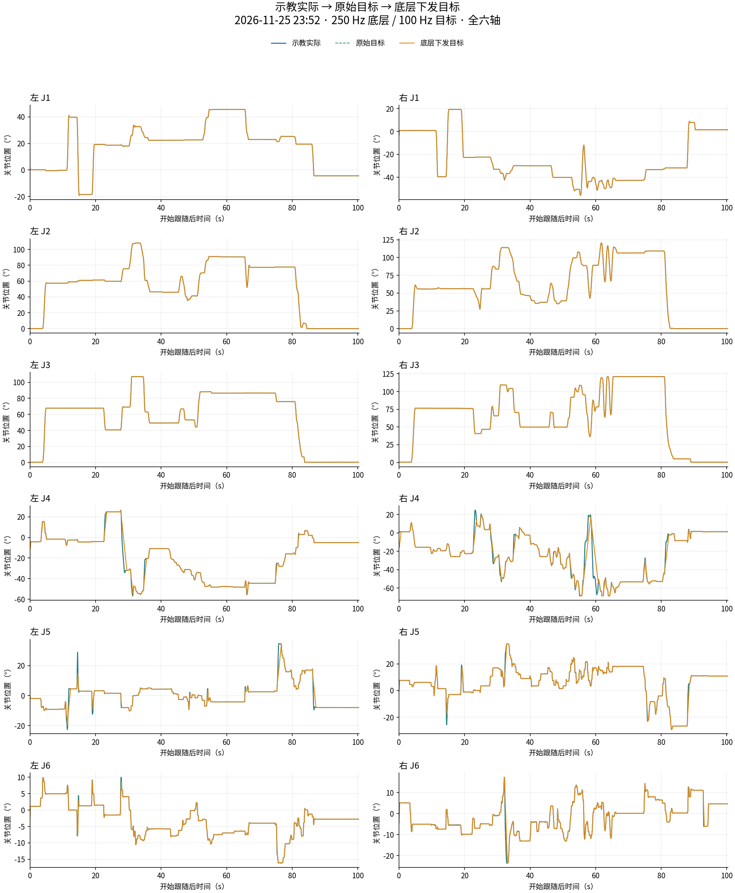
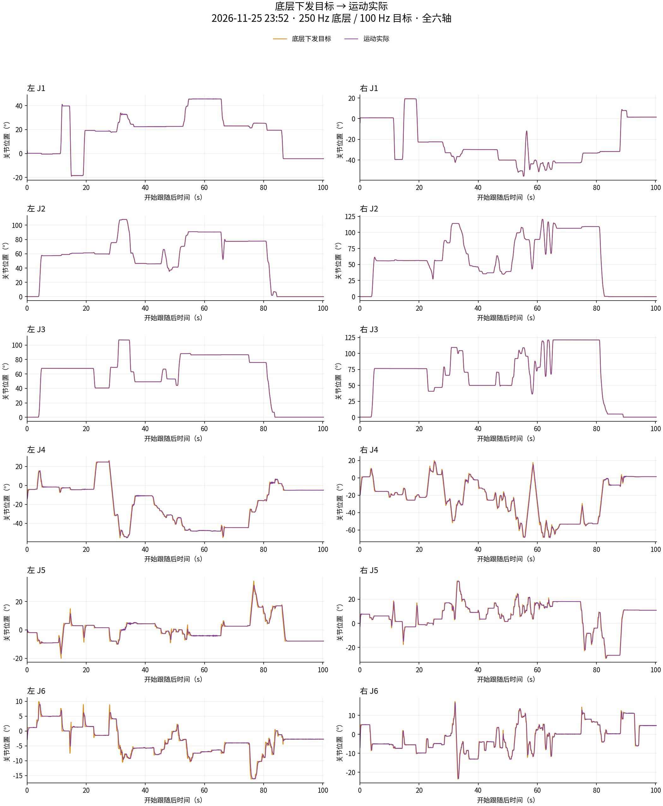

真机 2026-11-25 23:52:02–23:53:42 · 会话 f1699253fb · 与 23:13 的 KP54 记录对比
本次仅分析保存的日志；未修改程序，未连接或读写电机。
| 关节 | 进入并保持 ±0.5°：上轮 → 本轮 | 末段静止波动峰峰值：上轮 → 本轮 |
|---|---|---|
| 左 J4 | 0.76 → 0.53 s | 0.197 → 0.087° |
| 右 J4 | 1.32 → 0.90 s | 0.066 → 0.066° |
两轮启动时，左 J4 误差约 10°，右 J4 约 21°，示教位置基本静止。到位时间从开始跟随计，要求进入 ±0.5° 后保持到第 2 秒。这是整条跟随链路的追齐时间，不是电机内部闭环周期。末段静止窗口：上轮 40–44.3 s，本轮 95–100 s。
末段表现良好不代表所有姿态完全没有波动：按“六轴示教在连续 2 秒内各自变化不超过 0.1°”筛选，取最后 1 秒计算，本轮左 J4 最大峰峰值约 0.50°（38.25–39.25 s），右约 0.17°。未观察到此前持续放大的十几度振荡，但仍有小幅残余波动。

右 J4 在 t=59.246 s：示教 −47.68°、原始目标 −47.46°、底层下发目标 −6.47°、实际 −2.87°。示教与原始目标接近，但原程序相对运动臂反馈的限步让下发目标只领先实际约 3.60°，最终示教与实际相差 44.81°。左 J4 最大示教误差约 29.09°。
J4–J6 每次目标允许领先跟随臂当前位置约 4.30°；运动臂来不及跟上时，限步持续作用，目标变成受约束的追赶过程。不能把总差值全部当成通信延迟，也不能把限步与电机动态简单分成互不相关的两个原因。
3–90 s，含其中的停顿。表内按“左 / 右”排列，误差单位为度。目标受限指 |原始目标−限步目标| > 0.001 rad。
| 轴 | 下发目标−实际 RMS | 示教−实际 RMS | 目标受限占比 |
|---|---|---|---|
| J1 | 0.26 / 0.30 | 0.38 / 0.44 | 0.0% / 0.1% |
| J2 | 0.29 / 0.44 | 0.44 / 0.64 | 0.0% / 0.2% |
| J3 | 0.32 / 0.53 | 0.48 / 0.77 | 0.0% / 0.2% |
| J4 | 1.23 / 1.95 | 3.65 / 6.90 | 6.5% / 16.5% |
| J5 | 1.28 / 1.16 | 2.89 / 2.07 | 6.0% / 3.7% |
| J6 | 0.82 / 0.91 | 0.99 / 1.69 | 1.2% / 2.0% |
J1–J3 的下发目标跟随误差较小；剩余差距主要在 J4，J5 快速动作也有明显误差。两轮手动轨迹的幅度、速度及停顿比例不同，不能用整段 RMS 的下降百分比作为参数改善量。这里保留逐轴数据，避免只用末段静止表现判断效果。
跟随 100.352 s；四条臂底层循环及每轴指令约 250 Hz，上位机目标约 99.99 Hz。跟随阶段没有新增控制超时计数、缺失周期、记录队列丢弃、位置无效或故障标志。
| 主机链路匹配 | 中位数 | P95 | 匹配 / 有效变化向量 |
|---|---|---|---|
| 左 · 示教快照→原始目标 | 2.33 ms | 4.30 ms | 5447 / 5447 |
| 左 · 限步目标→底层串口写入 | 2.81 ms | 3.67 ms | 5562 / 5562 |
| 右 · 示教快照→原始目标 | 1.34 ms | 2.68 ms | 6553 / 6553 |
| 右 · 限步目标→底层串口写入 | 2.36 ms | 3.48 ms | 6553 / 6553 |
仅匹配变化中的六轴向量，窗口为 80 ms。示教使用最近相同快照，底层使用最早相同串口写入；量化后重复值可能低估间隔。这些是主机观测时间，不是 CAN ACK、纯通信延迟或电机内部采样周期。
自动摘要的 sample_gaps_or_invalid_feedback 标记来自启动时各数据流尚未对齐：12 个示教字段空值，24 个原始/限步目标字段空值。第 1 秒之后没有空值；原生控制周期连续。整段包含多次往返，不能拟合成一个理想阶跃。
启动未回零，运动臂直接追随示教位置。退出时四条臂均记录 Reached arm/home，原生轨迹为保持 2 秒、运动 20 秒；回零阶段约 22.1–22.5 秒结束，随后全部确认失能，无关闭错误。
本轮参数标签依据 23:41 的已核验写入：双运动臂 J4 KP_APR=80、KI_APR=0、KP_ASR=0.00372、KI_ASR=0.002，仅写 RAM。日志本身没有运行期间的增益回读；若写入后曾断电重启，不能据此确认运行时仍为 80。本次没有重新连接电机扫描。


曲线未经平滑或人为时间平移；时间零点均为进入跟随状态。完整统计与源文件哈希 · 离线复现脚本